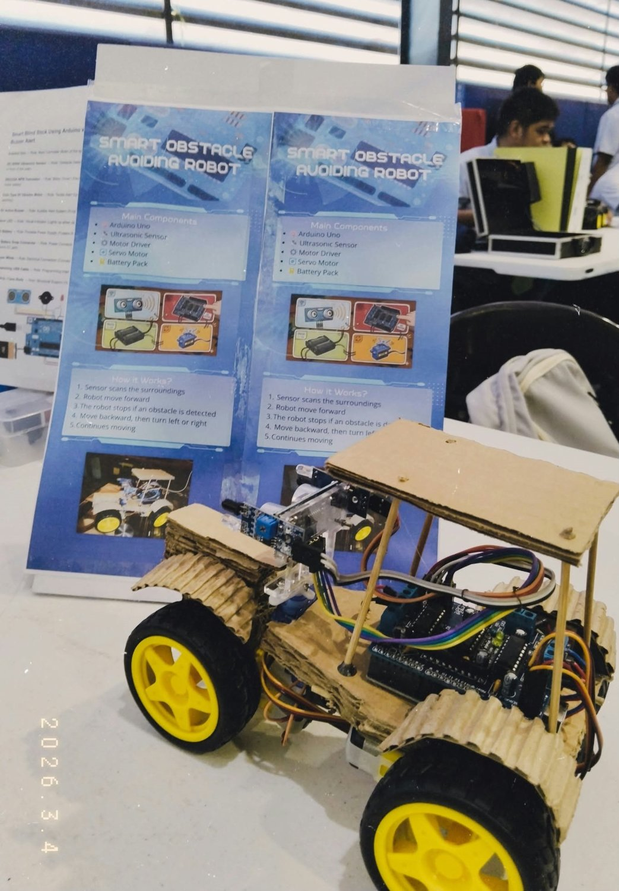

Hardware Integration
Microcontrollers, sensors, circuitry, and embedded prototypes that connect physical systems with software.
identity.session / portfolio active
I turn hardware and software ideas into functional prototypes and web applications, combining microcontrollers, electronics, interface design, and problem-solving.
01 / OPERATOR PROFILE
A Computer Engineering student at ICCT Colleges, working where electronics, software, and useful human experiences come together.
I am a Bachelor of Science in Computer Engineering student with practical project experience in microcontrollers, hardware troubleshooting, PC maintenance, software development, web design, networking, and technical production. I enjoy learning new technologies and integrating them into real-world prototypes.
Microcontrollers, sensors, circuitry, and embedded prototypes that connect physical systems with software.
Interfaces and web applications developed with programming fundamentals, responsive design, and data workflows.
PC assembly, troubleshooting, Windows configuration, networking, and hands-on problem solving.
02 / ENGINEERING PIPELINE
The way I approach engineering tasks, from defining a problem to improving a prototype.
Identify needs, constraints, and the problem a solution must address.
Map out circuits, system components, interactions, and user flows.
Assemble hardware or implement initial application features.
Connect sensors, logic, data, and user interfaces into a single flow.
Check functionality, reproduce issues, and refine the experience.
Document the results, demonstrate the system, and plan improvements.
03 / PROJECT CASE FILES
Not just screenshots—each case explains the need, the build, and what the project demonstrates.

EnlargeAn Arduino-powered prototype that detects obstacles and steers using an ultrasonic sensor and motor controls.
A mobile robot needs to recognize nearby obstacles and respond to them.
Ultrasonic sensing, Arduino Uno control, motor driver, and servo steering logic.
Hands-on integration of sensing, electronics, and movement control.
 Enlarge
Enlarge
A prototype combining scheduled reminders, a motorized tray, display controls, sensing, and wireless alert components.
Medication schedules are easy to miss without a timely reminder.
Microcontroller control, DS3231 RTC, LCD, servo, IR sensor, and RF-linked alerts.
Coordinating timed logic with physical components and user feedback.
 Enlarge
Enlarge
A responsive logistics tracking interface for looking up packages and presenting recorded delivery progress.
Customers need a clearer way to check a shipment's reported progress.
A tracking interface, status presentation, and shipment information workflow.
Responsive web UI, JavaScript interactions, and data-oriented page design.
A church ministry management mobile app in development, focused on announcements, schedules, and coordination. My roles cover frontend development and system analysis.
Provide members and ministry leaders with a clear, accessible entry point for church-related information and coordination.
Worked on the application’s opening and sign-in screens, translating page requirements into mobile interface components, navigation elements, and account-entry fields.
Analyzed registration and sign-in flows, the distinction between member and administrator access, and how dashboards and announcements fit into the intended user experience.
The shared screenshots show the Get Started page and the login screen with email/mobile number and password inputs, password recovery, and a Google sign-in option.
Combined frontend implementation work with requirements analysis, helping align the screens and navigation structure with the intended ministry workflows.
No projects match this filter.
04 / TECH STACK & PRACTICE
Programming, electronics, design, and troubleshooting skills gathered through academic projects and practical work.
 C / C++
C / C++ Arduino
Arduino Android Studio
Android Studio HTML
HTML CSS
CSS JavaScript
JavaScript GitHub
GitHub Python
Python Java
Java Supabase
Supabase MySQL
MySQL Kotlin
KotlinComputer hardware troubleshooting, PC assembly and maintenance, Arduino and ESP32, Raspberry Pi, circuit design and testing, microcontroller programming, sensors, actuators, and hardware–software integration.
Software development, C/C++, object-oriented programming, web design, HTML, CSS, JavaScript, Android Studio, UI/UX, Arduino IDE, software troubleshooting, and project coordination.
Computer networking, LAN configuration, network troubleshooting, Windows installation and configuration, PC technical support, and systems maintenance.
05 / EXPERIENCE & EDUCATION
Academic learning, technical leadership, and practical computer maintenance experience.
Media & Communication · River of Life Methodist Church
Technical support · Taytay, Rizal
Academic Embedded Systems Project · ICCT Colleges
Object-Oriented Programming Project · ICCT Colleges
Science Investigatory Project · ICCT Colleges
Senior High School Work Immersion · Taytay Senior High School
ICCT Colleges
Taytay Senior High School
Taytay National High School
RECOGNITION.LOG
Certificate presented to group ELNO for participation in the Top 15 at Bato-Balani Version 2.0, March 2024.
View certificate
06 / GITHUB SIGNAL
Explore my repositories and current public development activity directly on GitHub.
Source code, learning projects, and ongoing experiments.
Public profile statistics are loaded from GitHub when the connection is available.
07 / CONTACT.PORTAL
Interested in a software project, hardware prototype, or technical collaboration? Here's how to reach me.
Selecting an option opens your email app with a suggested subject. Nothing is sent automatically.